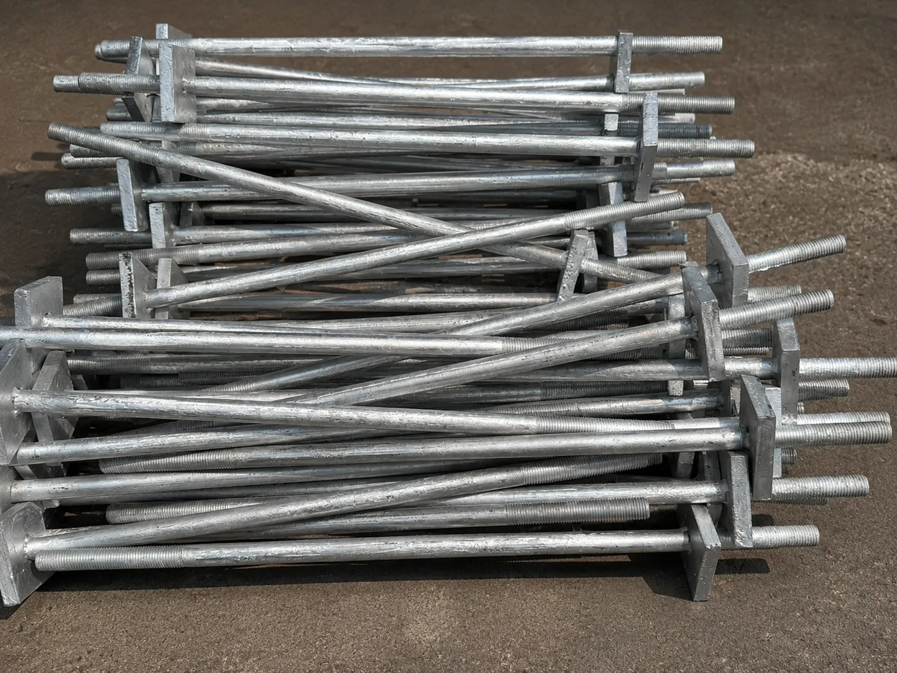

El pernocorrecto,con su ficha.
Importamos pernería de alta producción y fabricamos anclajes según tu plano. Revisa norma, calidad y cuadro de medidas de cada producto antes de cotizar.
Cinco líneas, una ficha técnica para cada pieza
Elige una línea para abrir su catálogo: fotos, planos con cotas, calidades y cuadros de medida listos para cotizar.
Toca tu medida y cotízala
Cambia entre foto y plano, recorre el cuadro de medidas y marca la fila que necesitas. El botón de WhatsApp lleva el producto y la medida.
Cómo reconocer la calidad de un perno
La resistencia viene marcada en la cabeza. Así compruebas en obra que lo que recibes es lo que pediste.
Anclajes ASTM F1554: el color en la punta
Los pernos de anclaje F1554 se identifican con pintura en el extremo que queda a la vista. El número del grado es su límite de fluencia mínimo en ksi.
Elige el acabado por el ambiente
El mismo perno dura años más o menos según dónde va instalado. Esta es la regla con la que recomendamos.
Negro o pavonado
Para piezas embebidas en concreto, que irán pintadas o en interiores secos.
Zincado
Protección superficial para interiores y ambientes moderados.
Galvanizado en caliente
Para exteriores, zonas industriales y la máxima durabilidad anticorrosiva.
Inoxidable 304 / 316
Para ambientes húmedos, mineros o químicos. El 316 resiste mejor la zona costera.

Lo que no está en catálogo, lo fabricamos
Desde un plano, un croquis o una muestra física: ajustamos diámetro, largo, rosca, geometría, material y acabado.
Pernos de anclaje a medida
Tipo L, tipo J, rectos y configuraciones especiales para cimentaciones, placas base y equipos pesados.
Estructuras metálicas
Placas base, pedestales y soportes, incluidos los de telecomunicaciones, habilitados y soldados.
Corte y habilitado de varillas
Espárragos y varillas en el largo exacto para agilizar el montaje en obra.


Nos envías el requerimiento
Plano, muestra, medida o especificación técnica.
Revisión técnica
Definimos material, rosca, geometría y acabado para tu aplicación.
Fabricación
Corte, roscado, soldadura y acabado con control dimensional.
Entrega
Recojo en planta o despacho coordinado a tu obra en todo el Perú.
A quién atendemos
Pide tu cotización
Completa lo que sepas. Se abrirá WhatsApp con tu mensaje listo; si tienes un plano, adjúntalo en el chat.
- WhatsApp y teléfono
- +51 940 479 303Lunes a sábado, 8:30 a. m. a 6:30 p. m.
- Correo
- victorm@anclajesperu.com
- Planta y despacho
- Jr. E. Correa 407, Santa LuzmilaAv. Los Ángeles con Av. El Retablo, Comas, Lima